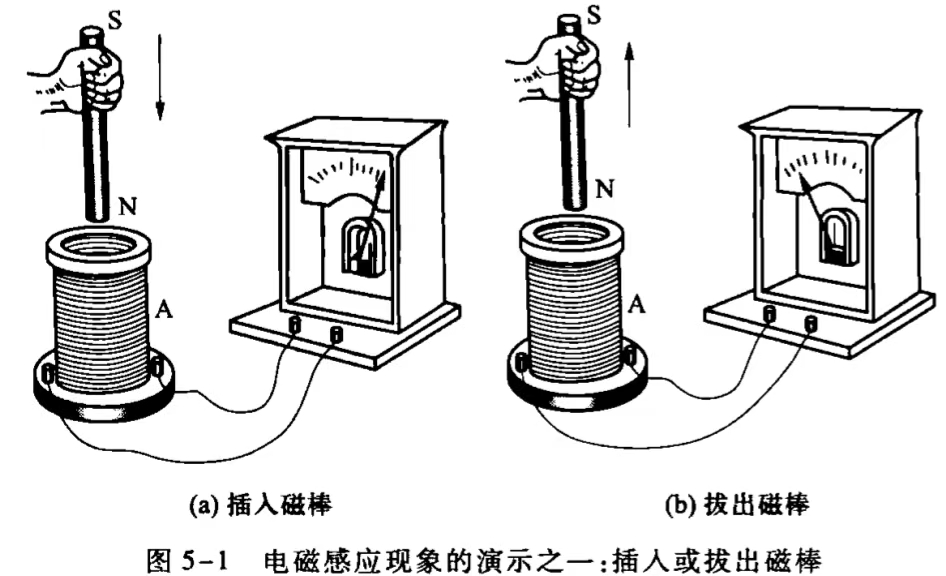
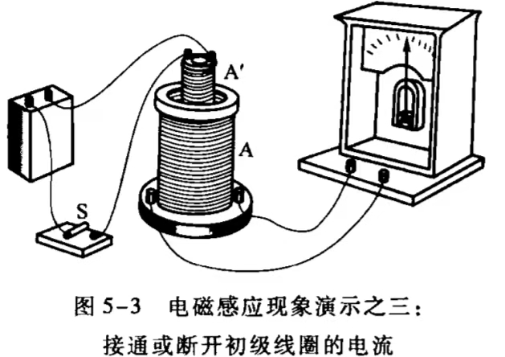
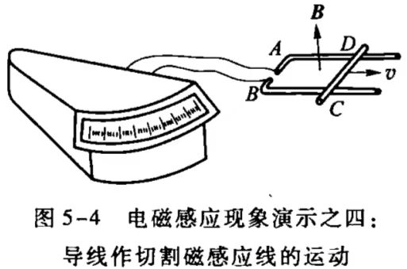

闭合回路包围面积的磁通量发生变化时，回路中会有电流产生。
感应电流电磁感应现象产生的电流，其方向由楞次定律判断。
楞次定律感应电流激发的磁场，总是阻止引起感应电流的磁通量的变化。
电源任何闭合回路中的电流都会消耗电能，给闭合回路中的电流提供电能的装置叫做电源。
| 电源 | 正极：电势较高的一极 |
| 负极：电势较低的一极 |
| 闭合电路 | 内电路：电源内的电路 |
| 外电路：电源外的电路 |
把单位正电荷从电源负极移动到正极时，电源中的非静电力所做的功。
Q1：什么是电磁感应？
Q2：产生电磁感应现象的条件？
将线圈两端接在电流计上，由于回路中未接电源，因此电流计指针不偏转.
将一根磁棒插入线圈，插入过程中电流计指针发生偏转（a），线圈中产生了感应电流.
磁棒静止不动时，线圈中不存在感应电流，电流计指针不发生偏转.
将磁棒拔出线圈，拔出过程中电流计指针发生偏转，偏转方向与插入磁棒时相反（b），说明感应电流方向也相反.

磁棒插入或拔出的速度越快，电流计指针偏转的角度越大，即感应电流越大.
保持磁棒静止，使线圈相对磁棒运动，可以观察到相同的现象.
用通电线圈代替磁棒重复实验1，可以观察到相同的现象.
将线圈A'同直流电源与开关S串联，再将A'插入A内，接通开关S的瞬间电流计偏转一下又回到零点.
断开S的瞬间电流计反方向偏转一下然后回到零点.
线圈A'通电或断电的瞬间，线圈A中产生感应电流.

若使用一个可变电阻代替开关S，当调节可变电阻来改变线圈A'中电流强度时，同样可以看到电流计指针偏转，即线圈A中产生感应电流.
调节可变电阻的动作越快，线圈A中的感应电流越大.
实验1、2、3说明：只要线圈A处的磁场发生变化，线圈A中就会产生感应电流.
将接有电流计的导体线框ABCD放在均匀恒磁场中，使线框平面与磁场方向垂直.
线框的CD边可以沿着AD和BCD边滑动并保持接触.

当使CD边朝某方向滑动，电流计指针发生偏转，即在线宽ABCD中产生感应电流.
CD边滑动越快，感应电流越大.
CD边朝反方向滑动，感应电流方向相反.
从以上四个实验中可以得到产生感应电流的条件：
当穿过闭合回路（如线圈A与电流计组成的回路、线框ABCD等）的磁通量发生变化时，回路中就产生感应电流.